| Note
:
Before installing XSQL Pages on a production server, please read the section below on Security Considerations for Production XSQL Pages System |
As the Internet drives an explosive demand for flexible information exchange, more and more application developers need to put their business data to work over the Web. Developers require standards-based solutions to this problem and SQL, XML, and XSLT are the standards that can get the job done in practice.
SQL is the standard you are already familiar with for accessing appropriate views of business information in your production systems. XML provides an industry-standard, platform-neutral format for representing the results of SQL queries as "datagrams" for exchange, and XSLT defines the industry-standard way to transform XML "datagrams" into target XML, HTML, or Text formats as needed.
By combining the power of SQL, XML, and XSLT in the server with the ubiquitously available HTTP protocol for the transport mechanism you can:
Receive web-based information requests from any client device on the Web,
Query an appropriate logical "view" of business data needed by the request,
Return the "datagram" in XML over the web to the requester, or optionally
Transform the information flexibly into any XML, HTML, or text format they require.
Of course, Oracle 8i, the Oracle XML Developer's Kit, and the XML SQL Utility for Java provide all of the core technology needed by developers to implement this solution. However it is Oracle XSQL Pages that bring this capability to the "rest of us" by automating the use of these underlying XML technology components to solve the most common cases without programming.
Oracle XSQL Pages are templates that allow anyone familiar with SQL to declaratively:
Assemble dynamic XML "datapages" based on one or more parametrized SQL queries, and
Transform the "datapage" to produce a final result in any desired XML, HTML, or Text-based format using an associated XSLT Transformation.
The two key design goals of Oracle XSQL Pages are:
Make simple things very simple and hard things possible
Keep the "datapage" cleanly separate from the way that data will be rendered to the requester.
XSQL Pages are simple to build. Just use any text editor to create
an XML file that includes
For example, to serve a list of available flights today for any desired destination city from your enterprise database in response to a URL request like:
http://yourcompany.com/AvailableFlightsToday.xsql?City=NYC
you might write an XSQL Page like:
<?xml version="1.0"?>
<xsql:query connection="demo" bind-params="City" xmlns:xsql="urn:oracle-xsql">
SELECT Carrier, FlightNumber, Origin, TO_CHAR(ExpectedTime,'HH24:MI') Due
FROM FlightSchedule
WHERE TRUNC(ArrivalTime) = TRUNC(SYSDATE)
AND Destination = ?
ORDER BY ExpectedTime
</xsql:query>
To return the same information in HTML or some alternative XML
format that might comply with a particular DTD you've been given, just
associate an appropriate with
<?xml version="1.0"?>
<?xml-stylesheet type="text/xsl" href="FlightList.xsl"?>
<xsql:query connection="demo" bind-params="City" xmlns:xsql="urn:oracle-xsql">
SELECT Carrier, FlightNumber, Origin, TO_CHAR(ExpectedTime,'HH24:MI') Due
FROM FlightSchedule
WHERE TRUNC(ArrivalTime) = TRUNC(SYSDATE)
AND Destination = ?
ORDER BY ExpectedTime
</xsql:query>
Once you've built a set of XSQL Pages, you can "exercise" your templates by:
Requesting the pages over the Web from browsers or client programs after installing the Oracle XSQL Servlet on your favorite Web Server,
Using the Oracle XSQL Command Line Utility in batch programs,
Calling the
These release notes explain in detail how to setup the Oracle XSQL Servlet and how to make use of all the time-saving features supported by XSQL Page templates.
Using XSQL Pages, the information you already have in your Oracle database, and the power of SQL, XML, and XSLT, you'll quickly discover that a powerful and flexible world of web data publishing is at your fingertips.
Release 10.0.0.0 adds several new features:
Many users have requested an easy way to work with parameters whose values are arrays of strings. The most common scenario where multi-valued parameters occur is when a user submits an HTML form containing multiple occurrences of input controls that share the same name.
Working with Array-Valued Parameters
In addition to the existing support for simple-string values,
now request parameters, session parameters, and page-private parameters may
have values that are arrays of strings. To treat to the value of a parameter as
an array, you add two empty square brackets to the end of its name. For
example, if an HTML form is posted having four occurrences of a input control
named
If you refer to an array-valued parameter as a lexical substitution parameter -- either inside an action handler attribute value or inside the content of an action handler element -- its value will be converted to a comma-separated list of all non-null and non-empty strings in the array in the order that they appear in the array. For example, if you had a page like:
<page xmlns:xsql="urn:oracle-xsql">
<xsql:query>
select description
from product
where productid in ( {@productid[]} ) /* Using lexical parameter */
</xsql:query>
</page>
and the request contains four values for the productid
parameter, then the
If you refer to an array-valued parameter without using the array-brackets notation on the end of the name, then the value used will be the value of the first array entry.
| Note
:
It is not supported to use a number
inside the array brackets. That is, you can refer to
|
Setting Array-Valued Page or Session Parameters From Strings
You can set the value of a page-private parameter or session parameter to a string-array value simply by using the array-brackets notation on the name like this:
<!-- Note, param name contains array brackets --> <xsql:set-page-param name="names[]" value="Tom Jane Joe"/>
or similarly for session parameters:
<!-- Note, param name contains array brackets --> <xsql:set-session-param name="dates[]" value="12-APR-1962 15-JUL-1968"/>
By default, when the name of the parameter being set is an name
with array-brackets, the value will be treated as a space-or-comma-separated
list and tokenized. The resulting string array value will contain these
separate tokens. In the examples above, the
In order to handle strings that contain spaces, the tokenization algorithm first checks the string being tokenized for the presence of any commas. If at least one comma is found in the string, then commas are used as the token delimiter. So, for example, the following action:
<!-- Note, param name contains array brackets --> <xsql:set-page-param name="names[]" value="Tom Jones,Jane York"/>
would set the value of the
By default, when you set a parameter whose name does not end with the array-brackets, then the string-tokenization does not occur. So, as in previous releases of XSQL Pages, the following action:
<!-- Note, param name does NOT contain array brackets --> <xsql:set-page-param name="names" value="Tom Jones,Jane York"/>
Sets a parameter named
<!-- Note, param name does NOT contain array brackets --> <xsql:set-page-param name="names" value="Tom Jane Joe" treat-list-as-array="yes"/>
sets the names parameter to the literal string
"
<!-- Note, param name does NOT contain array brackets -->
<xsql:set-page-param name="names" value="Tom Jones,Jane York,Jimmy"
treat-list-as-array="yes" quote-array-values="yes"/>
assigns the literal string value "
Binding Array-Valued Parameters in SQL and PL/SQL Statements
Anywhere in XSQL Pages where string-valued scalar bind
variables were supported previously, you may now bind array-valued parameters
by simply using the array-parameter name in the list of parameter names that
you supply for the
This makes it very easy to process array-valued parameters in
SQL statements and in PLSQL procedures. Array-valued parameters are bound as an
nested table object type named
CREATE TYPE xsql_table_of_varchar AS TABLE OF VARCHAR2(2000);
| Note
:
While the type must have this exact name,
|
Consider the following PL/SQL stored procedure:
FUNCTION testTableFunction(p_name XSQL_TABLE_OF_VARCHAR,
p_value XSQL_TABLE_OF_VARCHAR) RETURN VARCHAR2 IS
lv_ret VARCHAR2(4000);
lv_numElts INTEGER;
BEGIN
IF p_name IS NOT NULL THEN
lv_numElts := p_name.COUNT;
FOR j IN 1..lv_numElts LOOP
IF (j > 1) THEN
lv_ret := lv_ret||':';
END IF;
lv_ret := lv_ret||p_name(j)||'='||p_value(j);
END LOOP;
END IF;
RETURN lv_ret;
END;
The following page illustrates how to bind two array-valued
parameters in a SQL statement that uses this PL/SQL function taking
<page xmlns:xsql="urn:oracle-xsql" connection="demo" someNames="aa,bb,cc" someValues="11,22,33">
<xsql:query bind-params="someNames[] someValues[]">
select testTableFunction(?,?) as example from dual
</xsql:query>
</page>
This produces a resulting XML data page of:
<page someNames="aa,bb,cc" someValues="11,22,33">
<ROWSET>
<ROW num="1">
<EXAMPLE>aa=11:bb=22:cc=33</EXAMPLE>
</ROW>
</ROWSET>
</page>
illustrating that the array-valued someNames[] and someValues[]
parameters were bound as table collection types and the values were iterated
over and concatenated together to produce the
"
You can mix any number of regular parameters and array-valued parameters in your bind-params string. Just use the array-bracket notation for the ones you want to be bound as arrays.
| Note
:
If you try the example above and you have not created the XSQL_TABLE_OF_VARCHAR type as illustrated above, you will receive an error like this: <page someNames="aa,bb,cc" someValues="11,22,33">
<xsql-error code="17074" action="xsql:query">
<statement>select testTableFunction(?,?) as example from dual</statement>
<message>invalid name pattern: SCOTT.XSQL_TABLE_OF_VARCHAR</message>
</xsql-error>
</page>
|
Since the array parameters are bound as nested table collection
types, you can use the
<page xmlns:xsql="urn:oracle-xsql" connection="demo">
<xsql:set-page-param name="someEmployees[]" value="7369,7839"/>
<xsql:query bind-params="someEmployees[]">
select ename, sal
from emp
where empno in (
select * from TABLE(CAST( ? as xsql_table_of_varchar))
)
</xsql:query>
</page>
This produces a result like:
<page>
<ROWSET>
<ROW num="1">
<ENAME>SMITH</ENAME>
<SAL>800</SAL>
</ROW>
<ROW num="2">
<ENAME>KING</ENAME>
<SAL>5000</SAL>
</ROW>
</ROWSET>
</page>
These examples have shown using
Finally, some users might ask, "Why doesn't XSQL support using
PL/SQL index-by tables instead of nested table collection types for binding
string-array values?" The simple answer is that PL/SQL index-by-tables do not
work with the JDBC Thin driver. They only work using the OCI8 JDBC driver. By
using the nested table collection type
Supplying Multi-Valued Parameters on the Command Line
If you use the
java oracle.xml.xsql.XSQLCommandLine SomePage.xsql user=Steve user=Paul user=Mary
This will result in having the
Supplying Multi-Valued Parameters Programmatically with XSQLRequest
The
Using Multi-Valued Parameters in Custom XSQL Actions
The base class for custom XSQL actions,
A new method
New Behavior of <xsql:include-param> for Multi-Valued Parameters
The
<xsql:include-param name="productid"/>
includes a fragment of XML like this into your data page:
<productid>1234</productid>
If you use the new array-name syntax to indicate that you want
to treat the parameter as an array-valued parameter,
<productid> <value>1234</value> <value>4567</value> <value>890</value> </productid>
assuming the
<xsql:include-param name="productid[]"/>
Conditionally Execute Actions or Include Content with xsql:if-param
The new
You specify which parameter value will be evaluated by
supplying the required
In addition to the
This tests whether the named parameter exists and has a non-empty value. For an array-valued parameter, it tests whether the array-parameter exists, and has at least one non-empty element.
This tests whether the named parameter equals the string value provided. By default the comparison is an exact string match. If you want a case-insensitive match, supply the additional ignore-case="yes" attribute as well. For an array-valued parameter, it tests whether any element in the array has the indicated value.
This tests whether the named parameter does not equal the string value provided. For an array-valued parameter, it tests whether no element in the array has the indicated value.
This tests whether the named parameter matches any of the
strings in the provided list. The value of the
This tests whether the named parameter does not match any
of the strings in the provided list. The value of the
For the
All of the attributes of the
Any XML content or XSQL action element can be nested inside an
| Note
:
If the parameter being tested does not exist, the test evaluates to false. |
New Commit="No" Flag on Actions That Performed an Implicit Commit
The
Optionally Set an Error Param on Any Built-in Action
It is often convenient to know whether an action encountered a
non-fatal error during its execution. For example, an attempt to insert a row
or call a stored procedure could fail with a database exception. Now you can
optionally have any built-in XSQL action set a page-private parameter of your
choice when that action reports a non-fatal error by using the
For example, to have the parameter named
<xsql:dml error-param="dml-error" bind-params="val"> insert into yourtable(somecol) values(?) </xsql:dml>
If the execution of this action encounters an error, then the
page-private parameter named dml-error will be set to the string
"
If the execution of the action is
successful, the error parameter is not assigned any value.
In the example above, this would mean that if the page-private parameter
By using this new error parameter in combination with
<!-- NOTE: Connection "demo" must not set to autocommit! -->
<page connection="demo" xmlns:xsql="urn:oracle-xsql">
<xsql:dml error-param="dml-error" bind-params="val">
insert into yourtable(somecol) values(?)
</xsql:dml>
<!-- This second statement will commit if it succeeds -->
<xsql:dml commit="yes" error-param="dml-error" bind-params="val2">
insert into anothertable(anothercol) values(?)
</xsql:dml>
<xsql:if-param name="dml-error" exists="yes">
<xsql:dml>rollback</xsql:dml>
</xsql:if-param>
</page>
If you've written any custom action handlers andyour custom
actions call
Use Your Servlet Container's DataSource Implementation
As an alternative to defining your named
connections in the
Two new
Consider using this alternative connection manager
implementation if your servlet container's datasource implementation does
not use the Oracle JDBC driver under the covers. Certain
features of the XSQL Pages system will not be available when you are not using
an Oracle JDBC driver, like
Consider using this alternative connection manager
implementation when you know that your datasource implementation returns JDBC
When using either of these alternative connection manager
implementations, the value of the
Provide Custom XSQLErrorHandler Implementation
Many customers have asked for a programmatic way to control how
errors are reported to be able to customize the treatment of how page processor
errors (like a connection's being unavailable) are reported to users. A new
interface is introduced in this release
public interface XSQLErrorHandler {
public void handleError( XSQLError err, XSQLPageRequest env);
}
You can provide a class that implements the
For example, here is a sample implementation of
package test;
import oracle.xml.xsql.*;
import java.io.*;
/**
* Example of a custom XSQLErrorHandler implementation
*/
public class MyErrorHandler implements XSQLErrorHandler {
public void logError( XSQLError err, XSQLPageRequest env) {
// Must set the content type before writing anything out
env.setContentType("text/html");
PrintWriter pw = env.getErrorWriter();
pw.println("<H1>ERROR</H1><hr>"+err.getMessage());
}
}
You can control which custom
You can define the name of a custom
If the Page Processor can load this class and it correctly
implements the
You can override the error writer on a per-page basis using
the new, optional
The value of this attribute is the fully-qualified class
name of a class that implements the
Or you can use a combination of both approaches.
Provide Custom XSQLLogger Implementation
Customers have asked for a way to log XSQL page requests. Two
new interfaces are introduced in this release
The
public interface XSQLLoggerFactory {
public XSQLLogger create( XSQLPageRequest env);
}
You can provide a class that implements the
Here is the interface for
public interface XSQLLogger {
public void logRequestStart(XSQLPageRequest env) ;
public void logRequestEnd(XSQLPageRequest env);
}
The following two classes illustrate a trivial implementation
of a custom logger. First is the
package example;
import oracle.xml.xsql.*;
public class SampleCustomLogger implements XSQLLogger {
long start = 0;
public void logRequestStart(XSQLPageRequest env) {
start = System.currentTimeMillis();
}
public void logRequestEnd(XSQLPageRequest env) {
long secs = System.currentTimeMillis() - start;
System.out.println("Request for " + env.getSourceDocumentURI() + " took "+ secs + "ms");
}
}
Next, the factory implementation:
package example;
import oracle.xml.xsql.*;
public class SampleCustomLoggerFactory implements XSQLLoggerFactory {
public XSQLLogger create(XSQLPageRequest env) {
return new SampleCustomLogger();
}
}
To register a custom logger factory, edit the XSQLConfig.xml
file and provide the name of your custom logger factory class as the conent to
the
<XSQLConfig>
:
<processor>
:
<logger>
<factory>test.SampleCustomLoggerFactory</factory>
</logger>
:
</processor>
</XSQLConfig>
By default, this
Override the Default Name of of the XSQLConfig.xml file
Customers have requested a way to override the default
By setting the Java System property
The simplest way to accomplish this is to specify a Java VM
command-line flag like
By defining a servlet initialization parameter
This is accomplished by adding an
:
<servlet>
<servlet-name>XSQL</servlet-name>
<servlet-class>oracle.xml.xsql.XSQLServlet</servlet-class>
<init-param>
<param-name>xsql.config</param-name>
<param-value>MyConfigFile.xml</param-value>
<description>Please Use MyConfigFile.xml instead of XSQLConfig.xml</description>
</init-param>
</servlet>
:
Of course, the servlet initialization parameter is only
applicable to the servlet-based use of the XSQL Pages engine. When using the
| Note
:
The config file is always read from the CLASSPATH. For
example, if you specify a custom configuration parameter file named
|
Support for Apache FOP 0.20.3
If you need to render PDF output from XSQL pages, this release supports working with the 0.20.3 release candidate of Apache FOP. The source code for the FOP Serializer in this release looks like this:
package oracle.xml.xsql.serializers;
import org.w3c.dom.Document;
import org.apache.log.Logger;
import org.apache.log.Hierarchy;
import org.apache.fop.messaging.MessageHandler;
import org.apache.log.LogTarget;
import oracle.xml.xsql.XSQLPageRequest;
import oracle.xml.xsql.XSQLDocumentSerializer;
import org.apache.fop.apps.Driver;
import org.apache.log.output.NullOutputLogTarget;
/**
* Tested with the FOP 0.20.3RC release from 19-Jan-2002
*/
public class XSQLFOPSerializer implements XSQLDocumentSerializer {
private static final String PDFMIME = "application/pdf";
public void serialize(Document doc, XSQLPageRequest env) throws Throwable {
try {
// First make sure we can load the driver
Driver FOPDriver = new Driver();
// Tell FOP not to spit out any messages by default.
// You can modify this code to create your own FOP Serializer
// that logs the output to one of many different logger targets
// using the Apache LogKit API
Logger logger = Hierarchy.getDefaultHierarchy().getLoggerFor("XSQLServlet");
logger.setLogTargets(new LogTarget[]{new NullOutputLogTarget()});
FOPDriver.setLogger(logger);
// Some of FOP's messages appear to still use MessageHandler.
MessageHandler.setOutputMethod(MessageHandler.NONE);
// Then set the content type before getting the reader/
env.setContentType(PDFMIME);
FOPDriver.setOutputStream(env.getOutputStream());
FOPDriver.setRenderer(FOPDriver.RENDER_PDF);
FOPDriver.render(doc);
}
catch (Exception e) {
// Cannot write PDF output for the error anyway.
// So maybe this stack trace will be useful info
e.printStackTrace(System.err);
}
}
}
| Note
:
Using Apache FOP requires adding the following additional JAR files to your XSQL Pages runtime CLASSPATH to function correctly:
|
Set Preserve Whitespace Config Option
It is now possible to control whether or not the XSQL Page
Processor uses the Oracle XML Parser to parse XSQL page templates and XSLT
stylesheets with whitespace preserving mode. The default has always been to
preserve whitespace, but it can be slightly faster to parse these documents
with whitespace-preserving mode off. For backward compatibility, the default is
to preserve whitespace, but to turn off whitespace-preserving mode set the new
Tags present in stylesheet name are not quoted in the error message
A potential security issue was reported whereby a malicious
user could execute JavaScript in the browser by passing in a value like
<xsql:include-xml> Only Works with Clobs using the Oracle JDBC Driver
Now any JDBC driver that supports java.sql.Clob can be used to select a Clob-valued XML document for inclusion in the page.
As with any software running on a server, care must be taken to avoid risks of exposing sensitive information to malicious users. This section describes best practice security techniques for using the Oracle XSQL Servlet.
Install Your XSQLConfig.xml File in a Safe Directory
The
Failure to follow this recommendation could mean that a user of your site could accidentally (or intentionally) browse the contents of your configuration file.
Disable Default Client Stylesheet Overrideability When Your Pages Go Production
By default, the XSQL Page Processor allows the user to supply a
stylesheet in the request by passing a value for the special
Be Alert of the Use of Subsitution Parameters
With power comes responsibility. Any product, like Oracle Reports and XSQL Pages among others, that supports the use of lexical substitution variables in a SQL query can give a developer enough rope to hang himself. Any time you deploy an XSQL page that allows important parts of a SQL statement (or at the extreme, the entire SQL statement) to be substituted by a lexical parameter, you should make sure that you have taken appropriate precautions against misuse.
For example, one of the demonstrations that comes with XSQL Pages
is the "adhoc query demo". It illustrates how the entire SQL statement of an
Techniques that can be used to make sure your pages are not abused include:
Making sure the database user account associated with the page has only the privileges for reading the tables/views you want your users to see.
Using true bind variables instead of lexical bind variables when substituting single values in a SELECT statement. If you need to make syntactic parts of your SQL statement parameterized, then lexical parameters are the only game in town. Otherwise, true bind variabled are recommended so that any attempt to pass an invalid value will generate an error instead of producing an unexpected result.
This release includes an on-line Help System (built using XSQL Pages, of course) giving helpful information about the syntax and options for each XSQL Action Element. In additional helpful examples are provided illustrating each action. To access the help system, after successfully installing the XSQL Servlet, browse the URL:
http://yourmachine/xsql/index.html
| 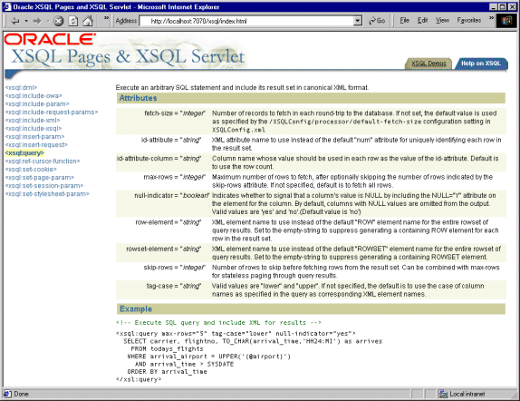 |
A number of new built-in XSQL Action Elements have been added in this release. The following table documents the new arrivals...
| Action Element | Description |
|
|
Set the value of a top-level XSLT stylesheet parameter. |
|
|
Set a page-level (local) parameter that can be referred to in subsequent SQL statements in the page. |
|
|
Set an HTTP-Session level parameter. |
|
|
Set an HTTP Cookie. |
|
|
Execute an arbitrary SQL statement and include its result set in canonical XML format. |
|
|
Includes the canonical XML representation of the result set of a cursor returned by a PL/SQL stored function. |
|
|
Include a parameter and its value as an element in your XSQL page. |
|
|
Include all request parameters as XML elements in your XSQL page. |
|
|
Include arbitrary XML resources at any point in your page by relative or absolute URL. |
|
|
Include the results of executing a stored procedure that makes use of the Oracle Web Agent (OWA) packages inside the database to generate XML. |
|
|
Includes nested actions and/or literal XML content if some condition based on a parameter value is true. |
|
|
Include the results of one XSQL page at any point inside another. |
|
|
Insert the XML document (or HTML form) posted in the request into a database table or view. |
|
|
Update an existing row in the database based on the posted XML document supplied in the request. |
|
|
Delete an existing row in the database based on the posted XML document supplied in the request. |
|
|
Inserts the XML document contained in the value of a single parameter. |
|
|
Execute a SQL DML statement or PL/SQL anonymous block. |
|
|
Invoke a user-defined action handler, implemented in Java, for executing custom logic and including custom XML information into your XSQL page. |
XSQL provides a single way to refer to values that can be specified as:
HTTP Request Parameters
HTTP Cookies
HTTP Session Variables
Local XSQL Page Parameters
When you reference an parameter like
<xsql:query>
select name from users where userid = {@myParam}
</xsql:query>
or in the attribute value of an XSQL Action Element, like:
<xsql:query max-rows="{@myParam}">
:
</xsql:query>
the XSQL Page Processor determines the value of the parameter by using the following logic.
If the request is being processed by the XSQL
Servlet, then check in the following order if
An XSQL local page parameter
An HTTP Cookie
An HTTP Session Variable
An HTTP Request Parameter
If the request is being processed by a non-Servlet request method
using
An XSQL local page parameter
An XSQL Request parameter
Provided on the command-line or passed into the
In either case, if none of the attempts produces a matching
parameter value, the XSQL Page Processor looks for a "fallback" (a.k.a
"default") value for
This release contains the following known issues:
HTTP parameters with multibyte names (e.g. a parameter whose
name is in Kanji) are properly handled when they are inserted into your XSQL
page using
Using the
When using the Apache JServ servlet engine, the use of
relative stylesheet and XSQL page references may not produce the results you
expect if you have an elaborate virtual path mapping. Since the Apache JServ
engine does not properly implement the Servlet API method
The XSQL Servlet is designed to run on any Java VM, using any JDBC driver, against any database. In practice, we are able to test it against only the most popular configurations of these. In this section we document the supported configurations that have been tested in the Oracle labs.
The XSQL Pages and XSQL Servlet have been tested using:
JDK 1.1.8
JDK 1.2.2
JDK 1.3
These are the only three JDK versions that we know work correctly.
| Note
:
Numerous users have reported problems using XSQL Pages and the XSQL Servlet with JDK 1.1.7 which suffers problems in its character set conversion routines for UTF-8 that make it unusable for processing XSQL Pages. |
This XSQL Servlet has been tested with the following servlet engines:
Oracle9iAS Apache/JServ Servlet Engine
Oracle9iAS OC4J Servlet Engine
Allaire JRun 2.3.3 and 3.0.0
Apache 1.3.9 with JServ 1.0 and 1.1
Apache 1.3.9 with Tomcat 3.1 or 3.2 Servlet Engine
Apache Tomcat 3.1 or 3.2 Web Server + Servlet Engine
Caucho Resin 1.1
Java Web Server 2.0
Weblogic 5.1 Web Server
NewAtlanta ServletExec 2.2 and 3.0 for IIS/PWS 4.0
Oracle8i Lite Web-to-Go Server
Oracle8i 8.1.7 Oracle Servlet Engine
Sun JavaServer Web Development Kit (JSWDK) 1.0.1 Web Server
JavaServer Pages can use
Oracle9iAS Apache/JServ Servlet Engine
Oracle9iAS OC4J Servlet Engine
Apache 1.3.9 with Tomcat 3.1 or 3.2 Servlet Engine
Apache Tomcat 3.1 or 3.2 Web Server + Tomcat 3.1 or 3.2 Servlet Engine
Caucho Resin 1.1 (Built-in JSP 1.0 Support)
NewAtlanta ServletExec 2.2 and 3.0 for IIS/PWS 4.0 (Built-in JSP 1.0 Support)
Oracle8i Lite Web-to-Go Server with Oracle JSP 1.0
Oracle8i 8.1.7 Oracle Servlet Engine
Any Servlet Engine with Servlet API 2.1+ and Oracle JSP 1.0
In general, it should work with any servlet engine supporting the Servlet 2.1 Specification or higher, and the Oracle JSP 1.0 reference implementation or functional equivalent from another vendor.
The Oracle XSQL Page processor has been designed to exploit the maximum set of features against the Oracle JDBC drivers, but gracefully degrade to work against any database with a reasonable JDBC driver. While numerous users have reported successfully using XSQL Pages with many other JDBC drivers, the ones that we have tested in-house are:
Oracle8i 8.1.5 Driver for JDBC 1. x
Oracle8i 8.1.6 Driver for JDBC 1. x
Oracle8i 8.1.7 Driver for JDBC 1. x
Oracle8i Lite 4.0 Driver for JDBC 1.x
Oracle8i 8.1.6 Driver for JDBC 2.0
Oracle8i 8.1.7 Driver for JDBC 2.0
Oracle9i 9.0.1 Driver for JDBC 2.0
Oracle XSQL Pages 10.0.0.0 depends on:
Oracle XML Parser V2, version 9.0.1 or higher
Oracle XML SQL Utilities for Java, version 2.0.1 or higher
A Web Server that supports Java Servlets
A JDBC driver, like Oracle JDBC or Oracle8i Lite JDBC
For your convenience, all of these dependent libraries are included with the XSQL Servlet distribution when you download it.
In addition to the Oracle XSQL Servlet archive itself in
Oracle XML Parser V2,
Oracle XML SQL Utility,
You can download the XSQL Servlet as part of the Oracle XDK for Java download by:
Visiting http://otn.oracle.com/tech/xml
Clicking on the 'Software' icon at the top of the page:
Logging in with your OTN username and password (registration is free if you do not already have an account).
Selecting whether you want the NT or Unix download (both contain the same files)
Acknowledging the licensing agreement and download survey
Clicking on appropriate
To extract the contents of the XDK distribution, do the following:
Choose a directory under which you would like the
Change directory to
tar xvfz xdk_xxx.tar.gz
on Unix, or on Windows:
pkzip25 -extract -directories xdk_xxx.zip
using the pkzip25 command-line tool or the WinZip visual archive extraction tool.
The demos are set up to use the
<?xml version="1.0" ?>
<XSQLConfig>
:
<connectiondefs>
<connection name="demo">
<username>scott</username>
<password>tiger</password>
<dburl>jdbc:oracle:thin:@localhost:1521:ORCL</dburl>
<driver>oracle.jdbc.driver.OracleDriver</driver>
</connection>
<connection name="lite">
<username>system</username>
<password>manager</password>
<dburl>jdbc:Polite:POlite</dburl>
<driver>oracle.lite.poljdbc.POLJDBCDriver</driver>
</connection>
</connectiondefs>
:
</XSQLConfig>
Unix users and any user wanting to install the XSQL Servlet on other web servers should continue with the instructions below depending on the web server you're trying to use. In every case, there are 3 basic steps:
Include the list of XSQL Java archives:
or the JAR file for the JDBC driver you will be using instead
as well as the directory where
| Note
:
In a production system, make sure your
|
Map the
Map a virtual directory
You can install the XSQL Servlet in one of two ways:
You can deploy the
You can install the XSQL Servlet as a global application to
handle
To install
Change directory to the
Deploy the ear file with the command (all on one line, replacing admin and welcome with your username and password for OC4J administration):
java -jar admin.jar ormi://yourserver/ admin welcome -deploy -file XDKHome/xdk/demo/java/xsql/xsqldemos.ear -deploymentName xsqldemos
Bind the web application with the command (all on one line,
replace
admin and
welcome as above, using
java -jar admin.jar ormi://yourserver/ admin welcome -bindWebApp xsqldemos xsqldemos http-web-site /xsql
The demos can then be run by browsing:
To install XSQL Servlet in the Oracle9iAS OC4J servlet
container as a global application, do the following instead. Assuming your OC4J
installation home is
Verify that the following jar files are already in your
Copy the following additional jar files from
Copy the
Edit the
<orion-web-app ...etc... >
:
etc
:
<web-app>
<servlet>
<servlet-name>xsql</servlet-name>
<servlet-class>oracle.xml.xsql.XSQLServlet</servlet-class>
</servlet>
<servlet-mapping>
<servlet-name>xsql</servlet-name>
<url-pattern>/*.xsql</url-pattern>
</servlet-mapping>
:
etc
:
</web-app>
</web-app>
At this point, you can refer to any XSQL page in
any virtual path and it will be processed by the XSQL
Servlet. If you want to try the XSQL built-in samples, demos, and online help
then you need to perform the following additional step to map a virtual path of
Edit the
<orion-web-app ...etc...>
:
etc
:
<virtual-directory
virtual-path="/xsql"
real-path="/c:/xdk/xdk/demo/java/xsql/" />
:
etc
:
</orion-web-app>
Then, you can browse the demos using the URL
| Note
:
In a production system, make sure your
|
Oracle IAS release 1.0 and beyond comes pre-configured to run
XSQL Servlet. By default it's Apache JServ servlet engine contains all of the
| Note
:
In a production system, make sure your
|
Setup the Server CLASSPATH Correctly for the XSQL Servlet
This is done by starting the JRun Administrator, clicking on the General tab, and clicking on the Java subtab as shown below.
| 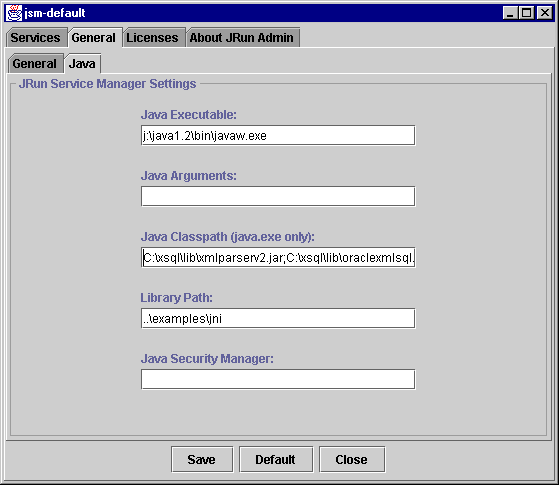 |
Append the list of JAR files and directory that need to be
in the server CLASSPATH for the XSQL Servlet to the existing value in the Java
Classpath field. Assuming you installed into
To use the Oracle JDBC 1.x Driver, the list looks like:
C:\xsql\lib\xsu111.jar;
C:\xsql\lib\xmlparserv2.jar;
directory_where_JDBC_Driver_resides\classes111.zip;
C:\xsql\lib\oraclexsql.jar;
directory_where_XSQLConfig.xml_resides
To use Apache FOP for PDF Generation, you need to add:
C:\xsql\lib\xsqlserializers.jar; FOPHOME/build/fop.jar; FOPHOME/lib/batik.jar; FOPHOME/lib/logkit-1.0.jar; FOPHOME/lib/avalon-framework-4.0.jar
To use the Oracle JDBC 2.0 Driver, the list looks like:
C:\xdk902\lib\xsu12.jar;
C:\xdk902\lib\xmlparserv2.jar;
directory_where_JDBC_Driver_resides\classes12.zip;
C:\xdk902\lib\oraclexsql.jar;
directory_where_XSQLConfig.xml_resides
Map the
To do this, select the Services tab in the JRun Administrator and select the appropriate "JRun Servlet Engine for XXX" entry for the Servlet Engine that corresponds to the web server that you are using. In the example below, we'll show configuring the Servlet Engine for the (built-in) JRun Web Server (JWS).
| 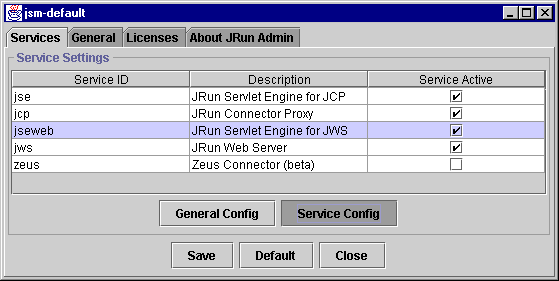 |
Then click the Service Config button...
On the Service Config screen, select the Mappings tab.
| 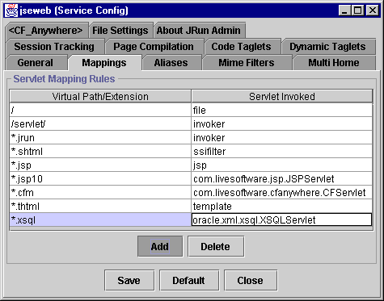 |
Click the Add button and make an entry for the
Map an
In this step, we want to map the virtual path
If you are using JRun together with another web server like Apache, IIS, or others, the virtual directory mapping needs to be done using the web server configuration file/utility. If you are using the JRun Web Server, then you can configure this virtual path mapping from the JRun Adminstrator. To do this, select the "jws" service and click on Service Config.
| 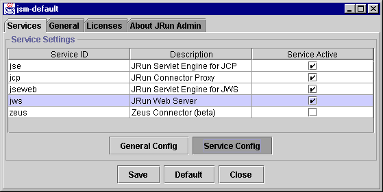 |
Click on the Path Settings tab on the Service Config dialog, and click the Add button as show below.
| 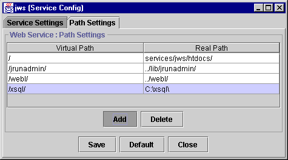 |
Make an entry for a virtual path of
Restart the JRun server and browse the URL:
http://localhost:8000/xsql/index.html
Setup the Server CLASSPATH Correctly for the XSQL Servlet
This is done by editing the JServ configuration file named
To use the Oracle JDBC 1.x Driver, the entries look like:
# Oracle XML SQL Utility (XSU) wrapper.classpath=C:\xdk902\lib\xsu111.jar # Oracle XSQL Servlet wrapper.classpath=C:\xdk902\lib\oraclexsql.jar # Oracle JDBC (8.1.6) -- JDBC 1.x driver wrapper.classpath=directory_where_JDBC_Driver_resides\classes111.zip # Oracle XML Parser V2 (with XSLT Engine) wrapper.classpath=C:\xdk902\lib\xmlparserv2.jar # XSQLConfig.xml File location wrapper.classpath=directory_where_XSQLConfig.xml_resides # FOR Apache FOP Generation, Add # wrapper.classpath=C:\xdk902\lib\xsqlserializers.jar # wrapper.classpath=FOPHOME/build/fop.jar # wrapper.classpath=FOPHOME/lib/batik.jar # wrapper.classpath=FOPHOME/lib/logkit-1.0.jar # wrapper.classpath=FOPHOME/lib/avalon-framework-4.0.jar
To use the Oracle JDBC 2.0 Driver, the list looks like:
# Oracle XML SQL Utility (XSU) wrapper.classpath=C:\xdk902\lib\xsu12.jar # Oracle XSQL Servlet wrapper.classpath=C:\xdk902\lib\oraclexsql.jar # Oracle JDBC (8.1.6) -- JDBC 2.0 driver wrapper.classpath=directory_where_JDBC_Driver_resides\classes12.zip # Oracle XML Parser V2 (with XSLT Engine) wrapper.classpath=C:\xdk902\lib\xmlparserv2.jar # XSQLConfig.xml File location wrapper.classpath=directory_where_XSQLConfig.xml_resides # FOR Apache FOP Generation, Add # wrapper.classpath=C:\xdk902\lib\xsqlserializers.jar # wrapper.classpath=FOPHOME/build/fop.jar # wrapper.classpath=FOPHOME/lib/batik.jar # wrapper.classpath=FOPHOME/lib/logkit-1.0.jar # wrapper.classpath=FOPHOME/lib/avalon-framework-4.0.jar
Map the
To do this, you need to edit the JServ configuration file
named
# Executes a servlet passing filename with proper extension in PATH_TRANSLATED # property of servlet request. # Syntax: ApJServAction [extension] [servlet-uri] # Defaults: NONE ApJServAction .xsql /servlets/oracle.xml.xsql.XSQLServlet
Map an
In this step, we want to map the virtual path
Alias /xsql/ "C:\xdk902\xdk\demo\java\xsql\"
Restart the Apache server and browse the URL:
http://localhost/xsql/index.html
Setup the Server CLASSPATH Correctly for the XSQL Servlet
This is done by editing the Tomcat startup script named
To use the Oracle JDBC 1.x Driver, the entries look like:
rem Set up the CLASSPATH that we need set cp=%CLASSPATH% set CLASSPATH=. set CLASSPATH=%TOMCAT_HOME%\classes set CLASSPATH=%CLASSPATH%;%TOMCAT_HOME%\lib\webserver.jar set CLASSPATH=%CLASSPATH%;%TOMCAT_HOME%\lib\jasper.jar set CLASSPATH=%CLASSPATH%;%TOMCAT_HOME%\lib\xml.jar set CLASSPATH=%CLASSPATH%;%TOMCAT_HOME%\lib\servlet.jar set CLASSPATH=%CLASSPATH%;%JAVA_HOME%\lib\tools.jar REM Added for Oracle XSQL Servlet REM ----------------------------- set CLASSPATH=%CLASSPATH%;C:\xdk902\lib\xsu111.jar set CLASSPATH=%CLASSPATH%;C:\xdk902\lib\oraclexsql.jar set CLASSPATH=%CLASSPATH%;C:\xdk902\lib\xmlparserv2.jar set CLASSPATH=%CLASSPATH%;directory_where_JDBC_Driver_resides\classes111.zip set CLASSPATH=%CLASSPATH%;directory_where_XSQLConfig.xml_resides REM FOR Apache FOP Generation, Add REM set CLASSPATH=%CLASSPATH%;C:\xdk902\lib\xsqlserializers.jar REM set CLASSPATH=%CLASSPATH%;FOPHOME/fop.jar REM set CLASSPATH=%CLASSPATH%;FOPHOME/lib/batik.jar
To use the Oracle JDBC 2.0 Driver, the list looks like:
rem Set up the CLASSPATH that we need set cp=%CLASSPATH% set CLASSPATH=. set CLASSPATH=%TOMCAT_HOME%\classes set CLASSPATH=%CLASSPATH%;%TOMCAT_HOME%\lib\webserver.jar set CLASSPATH=%CLASSPATH%;%TOMCAT_HOME%\lib\jasper.jar set CLASSPATH=%CLASSPATH%;%TOMCAT_HOME%\lib\xml.jar set CLASSPATH=%CLASSPATH%;%TOMCAT_HOME%\lib\servlet.jar set CLASSPATH=%CLASSPATH%;%JAVA_HOME%\lib\tools.jar REM Added for Oracle XSQL Servlet REM ----------------------------- set CLASSPATH=%CLASSPATH%;C:\xdk902\lib\xsu12.jar set CLASSPATH=%CLASSPATH%;C:\xdk902\lib\oraclexsql.jar set CLASSPATH=%CLASSPATH%;C:\xdk902\lib\xmlparserv2.jar set CLASSPATH=%CLASSPATH%;directory_where_JDBC_Driver_resides\classes12.zip set CLASSPATH=%CLASSPATH%;directory_where_XSQLConfig.xml_resides REM FOR Apache FOP Generation, Add REM set CLASSPATH=%CLASSPATH%;C:\xdk902\lib\xsqlserializers.jar REM set CLASSPATH=%CLASSPATH%;FOPHOME/build/fop.jar REM set CLASSPATH=%CLASSPATH%;FOPHOME/lib/batik.jar REM set CLASSPATH=%CLASSPATH%;FOPHOME/lib/logkit-1.0.jar REM set CLASSPATH=%CLASSPATH%;FOPHOME/lib/avalon-framework-4.0.jar
Map the
Tomcat supports creating any number of configuration "contexts" to better organize the web applications your site needs to support. Each context is mapped to a virtual directory path, and has its own separate servlet configuration information. XSQL Servlet comes with a pre-configured context file to make XSQL Servlet setup easier.
By default, Tomcat 3.1 and 3.2 come pre-configured with the
following contexts (defined by
The root context
We could install XSQL Servlet into one of these, but for simplicity we'll create a new context just for the XSQL Servlet that maps to the directory where you installed the XSQL Servlet distribution.
Edit the
<Context path="/test" docBase="webapps/test" debug="0" reloadable="true" /> <!-- | Define a Servlet context for the XSQL Servlet | | The XSQL Servlet ships with a .\WEB-INF directory | with its web.xml file pre-configured for C:\xdk902\xdk\demo\java\xsql | installation. +--> <Context path="/xsql" docBase="C:\xdk902\xdk\demo\java\xsql"/>
Note that the
<?xml version = '1.0' encoding = 'UTF-8'?>
<!DOCTYPE web-app PUBLIC "-//Sun Microsystems, Inc.//DTD Web Application 2.2//EN"
"http://java.sun.com/j2ee/dtds/web-app_2_2.dtd">
<web-app>
<servlet>
<servlet-name>oracle-xsql-servlet</servlet-name>
<servlet-class>oracle.xml.xsql.XSQLServlet</servlet-class>
</servlet>
<servlet-mapping>
<servlet-name>oracle-xsql-servlet</servlet-name>
<url-pattern> *.xsql </url-pattern>
</servlet-mapping>
</web-app>
| Note
:
To add the XSQL Servlet to an existing context, add the
servlet and servlet-mapping entries that you find in |
Map an
This is already achieved by creating the
Restart the Tomcat server and browse the URL:
http://localhost:8080/xsql/index.html
| Note
:
If you use Tomcat with an XML Parser (like the Sun Crimson Parser) that only supports DOM Leve 1 interfaces, then you must edit tomcat.bat to insure that the Oracle XML Parser's archive xmlparser.jar comes before the DOM Level 1 parser's archive in the classpath. For example, you could edit tomcat.bat to add the following line: REM NEED TO PUT xmlparserv2.jar FIRST before parser.jar set CP=C:\xdk902\lib\xmlparserv2.jar;%CP% just before the line: echo Using CLASSPATH: %CP% echo. set CLASSPATH=%CP% |
Setup the Server CLASSPATH Correctly for the XSQL Servlet
This is done by browsing the url http://localhost/servlet/admin after starting the IIS Server, and clicking the VM Settings link under "Advanced" in the sidebar.
| 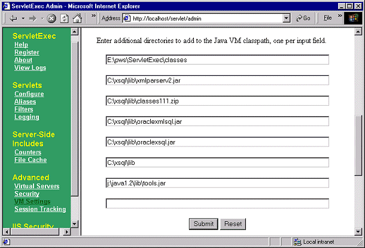 |
Add the four archives and one directory as shown above, by adding them one at a time and clicking the Submit button after each new entry.
Map the
Click on Configure under the
"Servlets" heading in the sidebar to browse the form where you register
servlets. Enter a Servlet Name of
| 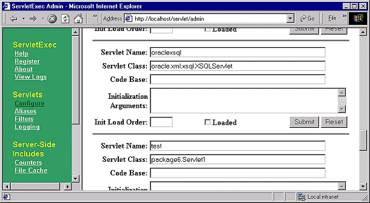 |
Then, click on Aliases under "Servlets" in the sidebar.
Add an entry as shown below mapping
| 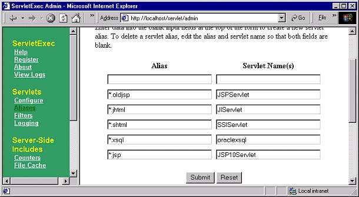 |
Map an
Use the IIS Admin console to create an
| 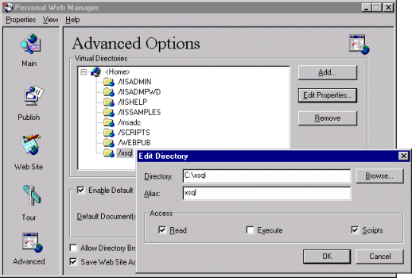 |
Restart the IIS server and browse the URL:
http://localhost/xsql/index.html
To setup the data for the demos do the following:
Change directory to the
In this directory, run SQLPLUS. Connect to your database as
GRANT EXECUTE ON CTX_DDL TO SCOTT;
Connect to your database as
GRANT QUERY REWRITE TO SCOTT;
This allows SCOTT to create a functional index that one of the demos uses to perform case-insensitive queries on descriptions of airports.
Connect to your database as
Run the script
Change directory to the
| Note
:
To properly experience the Scalable Vector Graphics demonstration, you need to install an SVG plugin into your browser like the Adobe SVG Plugin. |
In addition to "flat" database query results, using the techniques described in this section you can easily produce XML from database query with nested structure by selecting information from structured columns in your XSQL page. Structured columns can be one of three types:
Strongly Typed, User-Defined Object
Strongly Typed, User-Defined Collection
Untyped Collection based on a SQL statement
Since the underlying Oracle XML SQL Utility for Java natively supports all of these combinations for producing richly structure XML from SQL statements that make use of these features, your Oracle XSQL Pages gain this capability for "free". We'll look at two simple examples...
If you have used the object/relational capabilities of
Oracle8i to create a user-defined object type called
CREATE TYPE POINT AS OBJECT (X NUMBER, Y NUMBER);
and have used your new
CREATE TABLE LOCATION ( NAME VARCHAR2(80), ORIGIN POINT );
and have inserted a row into this
INSERT INTO LOCATION VALUES ( 'Someplace', POINT(11,17) ); COMMIT;
Then, an XSQL page like
<xsql:query connection="demo" xmlns:xsql="urn:oracle-xsql">
SELECT name, origin
FROM location loc
WHERE loc.origin.x = {@x-coord}
</xsql:query>
...when requested using a URL like:
http://yourmachine.com/xsql/demo/point.xsql?x-coord=11
produces the output:
<ROWSET>
<ROW num="1">
<NAME>Someplace</NAME>
<ORIGIN>
<X>11</X>
<Y>17</Y>
</ORIGIN>
</ROW>
</ROWSET>
This demonstrates how the nested
| Note
:
See the supplied
|
If you have not created object types that contain a
pre-defined structure, you can still introduce nested
structure into your SQL queries using the
Taking the familar
<xsql:query connection="demo" xmlns:xsql="urn:oracle-xsql">
SELECT dname,
CURSOR( SELECT ename,sal
FROM emp
WHERE emp.deptno = dept.deptno) as employees /* Column Alias */
FROM dept
WHERE deptno = {@department}
</xsql:query>
Requesting this
http://yourserver.com/xsql/demo/empdept.xsql?department=10
produces the resulting XML "datapage":
<ROWSET>
<ROW num="1">
<DNAME>ACCOUNTING</DNAME>
<EMPLOYEES>
<EMPLOYEES_ROW num="1">
<ENAME>CLARK</ENAME>
<SAL>2450</SAL>
</EMPLOYEES_ROW>
<EMPLOYEES_ROW num="2">
<ENAME>KING</ENAME>
<SAL>5000</SAL>
</EMPLOYEES_ROW>
<EMPLOYEES_ROW num="3">
<ENAME>MILLER</ENAME>
<SAL>1300</SAL>
</EMPLOYEES_ROW>
</EMPLOYEES>
</ROW>
</ROWSET>
Note that the second column in the
Since the
One or more
One or more
The SQL statement that may appear within the
Any SQL statement can be included in an
you can quickly see how powerful, structured information can be created on the fly to get almost any structure you are looking for. This allows the processing speed of the database to be exploited for sorting and grouping instead of having to rely on slower techniques that would attempt these operations on flat data from within the XSLT stylesheet.
Of course, by using these query techniques in the
Oracle provides all the ingredients necessary to accomplish this task. The approach you take depends on whether you need to accomplish the insert from within your own Java program, or whether you want a simple, declarative way of inserting the target document.
The Oracle XML SQL Utility for Java contains the
The
The fact that
An arbitrary XML document
A database table
You can create an XSL Transformation that transforms the
source document
Let's say that the source document is an XML news feed like what you'll see if you browse the following URL from www.moreover.com ...
http://www.moreover.com/cgi-local/page?index_xml+xml
A shortened version of such a resulting XML document looks like this:
<?xml version="1.0"?>
<!DOCTYPE moreovernews SYSTEM "http://www.moreover.com/xml/moreovernews.dtd">
<moreovernews>
<article id="4227581">
<url>http://d.moreover.com/click/here.pl?x4227575</url>
<headline_text>Austin: webMethods gets deal with Dell</headline_text>
<source>dbusiness.com</source>
<media_type>text</media_type>
<cluster>XML and metadata news</cluster>
<tagline>Austin</tagline>
<document_url>http://washington.dbusiness.com/</document_url>
<harvest_time>Oct 30 1999 7:08AM</harvest_time>
<access_registration> </access_registration>
<access_status> </access_status>
</article>
<article id="4212701">
<url>http://d.moreover.com/click/here.pl?x4212698</url>
<headline_text>Microsoft continues XML push with resource kit</headline_text>
<source>InfoWorld</source>
<media_type>text</media_type>
<cluster>XML and metadata news</cluster>
<tagline></tagline>
<document_url>http://www.infoworld.com/</document_url>
<harvest_time>Oct 29 1999 7:27AM</harvest_time>
<access_registration> </access_registration>
<access_status> </access_status>
</article>
<article id="4202251">
<url>http://d.moreover.com/click/here.pl?x4202247</url>
<headline_text>IBM Brings XML To MQSeries</headline_text>
<source>Internet Week</source>
<media_type>text</media_type>
<cluster>XML and metadata news</cluster>
<tagline></tagline>
<document_url>http://www.internetwk.com/</document_url>
<harvest_time>Oct 28 1999 4:28PM</harvest_time>
<access_registration> </access_registration>
<access_status> </access_status>
</article>
<article id="4082434">
<url>http://d.moreover.com/click/here.pl?x4082432</url>
<headline_text>XML leader OnDisplay's travel clients praised</headline_text>
<source>Web Travel News</source>
<media_type>text</media_type>
<cluster>XML and metadata news</cluster>
<tagline></tagline>
<document_url>http://www.webtravelnews.com/</document_url>
<harvest_time>Oct 20 1999 7:34AM</harvest_time>
<access_registration> </access_registration>
<access_status> </access_status>
</article>
</moreovernews>
Next, let's say that you have a table called
CREATE TABLE newsstory( id NUMBER PRIMARY KEY, title VARCHAR2(200), url VARCHAR2(200), source VARCHAR2(200) );
And further, let's suppose that you want to insert information from the XML news feed from Moreover.com into this table.
So, we need to produce an XSL transformation that transforms the
information in the XML news feed from Moreover.com into the canonical format
that
We start by using an XSQL page to quickly produce one row of
canonical query results from the
<?xml version="1.0"?> <query connection="demo" max-rows="1"> SELECT * FROM NEWSTORY </query>
We can either request this page through the webserver, or more conveninently for this job, use the XSQL Command Line Utility to quickly put the XSQL Page's output into a file:
xsql newstory.xsql newsstory.xml
This command processes the
<?xml version = '1.0'?>
<ROWSET>
<ROW num="1">
<ID>1911</ID>
<TITLE>Some Title</TITLE>
<URL>http://somemachine/somepage.html</URL>
<SOURCE>SomeSource</SOURCE>
</ROW>
</ROWSET>
We can take this one row of canonical output from a
"
Add an
Remove the
Remove any elements corresponding to columns whose values will be assigned by database triggers, like the ID column will be in this example,
Surround the
Replace the literal text between the
The result of applying the changes outlined in the three steps above to the sample output of the:
query produces the following XSL Transformation:
<?xml version = '1.0'?>
<ROWSET xmlns:xsl="http://www.w3.org/1999/XSL/Transform">
<xsl:for-each select="moreovernews/article">
<ROW>
<TITLE><xsl:value-of select="headline_text"/></TITLE>
<URL><xsl:value-of select="url"/></URL>
<SOURCE>Moreover.com</SOURCE>
</ROW>
</xsl:for-each>
</ROWSET>
Which illustrates that we have:
Added the
<ROWSET xmlns:xsl="http://www.w3.org/1999/XSL/Transform">
Added the
<xsl:for-each select="moreovernews/article">
so that for each
Removed the
Changed the:
<TITLE>Some Title</TITLE> <URL>http://somemachine/somepage.html</URL>
tags to:
<TITLE><xsl:value-of select="headline_text"/></TITLE> <URL><xsl:value-of select="url"/></URL>
to plug-in the value of the current
Hard-coded the value of the
If we rename the now-edited
java oracle.xml.parser.v2.oraxsl moreover.xml moreover-to-newsstory.xsl out.xml
| Note
:
Since the <!DOCTYPE moreovernews
SYSTEM "http://www.moreover.com/xml/moreovernews.dtd">
declaration with an java -DproxySet=true
-DproxyHost=proxyServerName
-DproxyPort=80 oracle.xml.parser.v2.oraxsl ...
|
If we use Internet Explorer to browse the resulting
| 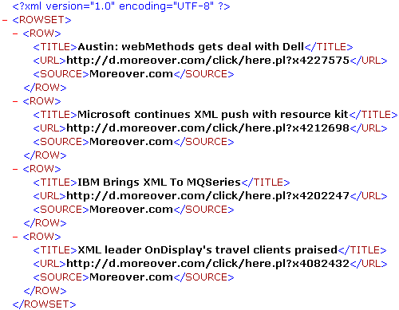 |
If we pass this resulting target document to the
The last step before showing how to tie it all together using Java or XSQL Pages is to create the database trigger to automatically assign the value of the ID column on insert. Assuming we have a sequence named newsstory_id_seq lying around, the code looks like:
CREATE TRIGGER newsstory_autoid
BEFORE INSERT ON newsstory FOR EACH ROW
BEGIN
SELECT newsstory_id_seq.nextval
INTO :new.id
FROM dual;
END;
The general steps for inserting XML into the database are:
Choose the table or view you want to use for inserting the XML information,
Create an XSL Transformation that transforms the inbound document into the canonical format for this table or view,
We saw a "cookbook" approach above for how to do this easily
based on a
Transform the inbound document into the canonical format for the table or view into which you want to insert it, and
Let
Oracle XSQL Pages support a simple
<xsql:insert-request
table="tableorviewname"
transform="transformname.xsl"/>
to the top of your XSQL page to perform the four steps above
automatically. So, for example, the following XSQL Page would accept
information posted through HTTP in the Moreover.com moreovernews format, and
insert it into the
<?xml version="1.0?>
<xsql:insert-request xmlns:xsql="urn:oracle-xsql"
connection="demo"
table="newsstory"
transform="moreover-to-newsstory.xsl"/>
Running this program retrieves the newsstories and inserts them
into our
Due to the nature of this news feed, news stories stay in the
feed for a few days. If we want to avoid inserting the same story over and over
again, we can easily do that by making sure we don't insert a story unless its
Title and URL are a unique combination in our
Let's implement this behavior using a database
Since
CREATE VIEW newsstoryview AS SELECT * FROM newsstory
Then we can create the
CREATE OR REPLACE TRIGGER insteadOfIns_newsstoryview
INSTEAD OF INSERT ON newsstoryview FOR EACH ROW
DECLARE
notThere BOOLEAN := TRUE;
tmp VARCHAR2(1);
CURSOR chk IS SELECT 'x'
FROM newsstory
WHERE title = :new.title
AND url = :new.url;
BEGIN
OPEN chk;
FETCH chk INTO tmp;
notThere := chk%NOTFOUND;
CLOSE chk;
IF notThere THEN
INSERT INTO newsstory(title,url,source)
VALUES (:new.title,:new.url,:new.source);
END IF;
END;
Here we are assuming that "uniqueness" of a story is defined by
the combination of its
CREATE UNIQUE INDEX newsstory_unique_title_url on newsstory(title,url);
We've written the body of the trigger in PL/SQL to demonstrate that you can mix and match PL/SQL and Java in this solution, but in Oracle8i we could have also written the INSTEAD OF trigger to call a Java Stored Procedures as well to perform the uniqueness check.
Finally, the only thing left to do is to change the
xsql:insert-request action element above to use the
<?xml version="1.0?>
<xsql:insert-request xmlns:xsql="urn:oracle-xsql"
connection="demo"
table="newsstoryview"
transform="moreover-to-newsstory.xsl"/>
Now, only unique newstories from the Moreover XML news feed will be inserted.
| Note
:
Using the same |
The
<?xml version="1.0"?>
<page connection="demo" xmlns:xsql="urn:oracle-xsql">
<xsql:insert-request table="newsstoryview" transform="moreover-to-newsstory.xsl"/>
<lateststories>
<xsql:query tag-case="lower" max-rows="5" rowset-element="" row-element="story" >
select *
from newsstory
order by id desc
</xsql:query>
</lateststories>
</page>
The XSQL page above inserts any posted XML document containing
| 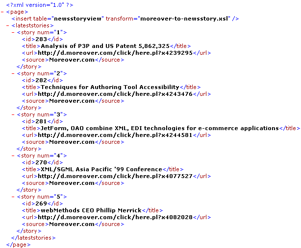 |
When XML is posted to a web server through HTTP, it's ContentType
is
<request>
<parameters>
<firstparamname>firstparamvalue</firstparamname>
:
<lastparamname>lastparamvalue</lastparamname>
</parameters>
<session>
<firstparamname>firstsessionparamvalue</firstparamname>
:
<lastparamname>lastsessionparamvalue</lastparamname>
</session>
<cookies>
<firstcookie>firstcookievalue</firstcookiename>
:
<lastcookie>firstcookievalue</lastcookiename>
</cookies>
</request>
and then allows an
| Note
:
If multiple parameters are posted with the same name, then they will automatically be "row-ified" to make subsequent processing easier. This means, for example, that a request which posts or includes the following parameters:
Will create a "row-ified" set of parameters like: <request>
<parameters>
<row>
<id>101</id>
<name>Steve</name>
</row>
<row>
<id>102</id>
<name>Sita</name>
</row>
<operation>update</operation>
</parameters>
:
</request>
|
Using an
<xsql:insert-request
table="newsstoryview"
transform="request-to-newsstoryview.xsl"/
and by referencing the name of the
<?xml version = '1.0'?>
<ROWSET xmlns:xsl="http://www.w3.org/1999/XSL/Transform" xsl:version="1.0">
<xsl:for-each select="request/parameters">
<ROW>
<TITLE><xsl:value-of select="title_field"/></TITLE>
<URL><xsl:value-of select="url_field"/></URL>
<SOURCE>User-Submitted</SOURCE>
</ROW>
</xsl:for-each>
</ROWSET>
If the above XSQL page were saved as
<html>
<body>
Insert a new news story...
<form action="insertnewsform.xsql" method="post">
<b>Title</b><input type="text" name="title_field" size="30"><br>
<b>URL</b><input type="text" name="url_field" size="30"><br>
<br>
<input type="submit">
</form>
<body>
</html>
If we let a user fill-out and post the form as-is, they will get
raw XML as a response from the
Using the mechanism we learned in the previous section for
associating XSL Stylesheets with XSQL Pages, we can include an
<html xmlns:xsl="http://www.w3.org/1999/XSL/Transform">
<head>
<title>Latest Stories</title>
</head>
<body>
<h2>Thanks for your Story!</h2>
Here's a list of the latest stories we've received...
<table border="0" cellspacing="0">
<xsl:for-each select="page/lateststories/story">
<tr>
<td><a href="{url}"><xsl:value-of select="title"/></a></td>
</tr>
</xsl:for-each>
</table>
</body>
</html>
This means the
<?xml version="1.0"?>
<?xml-stylesheet type="text/xsl" href="lateststories.xsl"?>
<page connection="demo" xmlns:xsql="urn:oracle-xsql">
<xsql:insert-request table="newsstoryview" transform="request-to-newsstory.xsl"/>
<lateststories>
<xsql:query tag-case="lower" max-rows="5" rowset-element="" row-element="story" >
select *
from newsstory
order by id desc
</xsql:query>
</lateststories>
</page>
Now when the user browses the
| 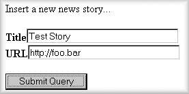 |
...then rather than seeing the raw XML datagram returned by the
| 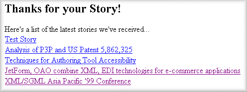 |
as an HTML page instead of as raw XML.
So in addition to being possible for developers by using Java programs that leverage the Oracle XML SQL Utility directly, we've seen that it's easy to insert XML-based information into Oracle database tables or views without programming using XSQL Pages and XSLT Transformations.
| Note
:
Here we've used simple examples with simple tables, however
The |
The following demo files are part of this release. Instructions for installing the demos are included in the Installation section of these release notes.
| Description of Demonstrations
|
|
| Demonstration Name
( |
Comments |
| Hello World
( |
Simplest possible XSQL page. |
| Do You XML Site
( |
XSQL page which shows how a simple, data-driven web site can be built using an XSQL page which makes clever use of SQL, XSQL-substitution variables in the queries, and XSLT for formatting the site. Demonstrates using substitution parameters in both the body
of SQL query statements within
|
| Employee Page ( |
XSQL page showing XML data from the EMP table, using XSQL
page parameters to control what employees are returned and what column(s) to
use for the database sort. Uses an associated XSLT Stylesheet for format the
results as an HTML Form containing the emp.xsql page as the form
|
| Insurance Claim Page ( |
Demonstrates a number of sample queries over the
richly-structured, Insurance Claim object view. The
|
| Invalid Classes Page ( |
XSQL Page which uses |
| Airport Code Validation ( |
XSQL page which returns a "datagram" of information about
airports based on their three-letter code. Demonstrates using the
The When you type in a three-leter airport code into this web page, some JavaScript under the covers fetches the XML datagram from the XSQL Servlet over the web corresponding to information for the airport code you typed in. If the return indicates that there was no exact match, the builds up a dynamic "picklist" of possible matches based on the information returned in the XML "datagram" from the XSQL Servlet. |
| Airport Code Display ( |
Demonstrates using the same XSQL page as the previous example but supplying an XSLT Stylesheet name in the request. This causes the airport information to be formatted as an HTML form instead of being returned as raw XML. |
| Airport Code Display ( |
Demonstrates returning Airport information as a SOAP Service. |
| Emp/Dept Object View Demo
( |
Demonstrates using an object view to group
master/detail information from two existing "flat" tables like EMP and DEPT.
The The |
| Adhoc Query Visualization
( |
Demonstrates passing the entire SQL query and XSLT Stylesheet to use as parameters to the server. |
| XML Document Demo ( |
Demonstrates inserting XML documents into
relational tables. The Try inserting the text of the document in
The The demo uses the client-side XML features of Internet Explorer 5.0 to check the document for well-formedness before allowing it to be posted to the server. |
| XML Insert Request Demo
( |
Demonstrates posting XML from a client to an
XSQL Page that handles inserting the posted XML information into a database
table using the
In this case, the program doing the posting of the XML is a
client-side web page using Internet Explorer 5.0 and the Try copying and pasting the example
The |
| SVG Demo ( |
The |
Once you've understood what the XSQL Page Processor running inside the XSQL Servlet does, you'll realize that Oracle XSQL Pages is really just a very thin layer of convenience functionality allowing you to leverage the tremendous flexibility and power of SQL, XML, and XSLT to really do the "heavy lifting".
| Note
:
Some of the material included in this document is excerpted from Building Oracle XML Applications by permission of O'Reilly and Associates. |